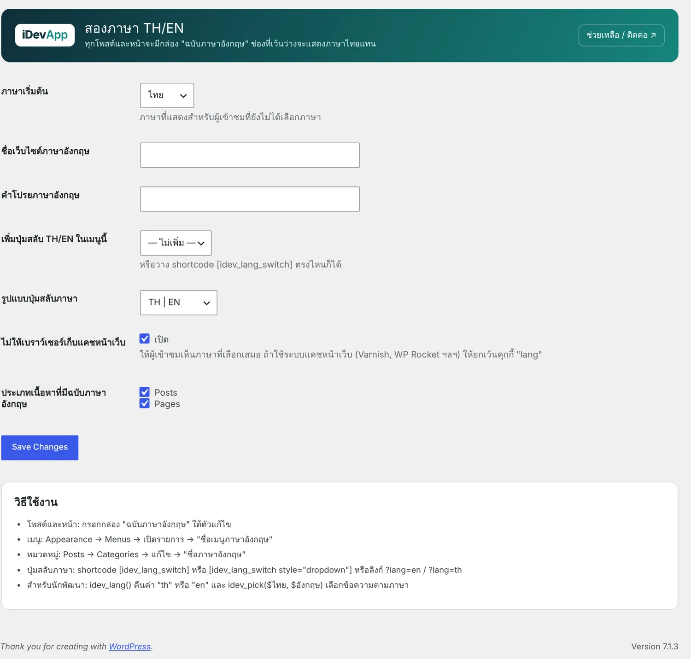

1ความสามารถ
- กล่อง ฉบับภาษาอังกฤษ ในทุกโพสต์และหน้า: ชื่อเรื่อง คำโปรย เนื้อหา · ช่องที่เว้นว่างแสดงภาษาไทยแทน
- ชื่อเมนูภาษาอังกฤษ และ ชื่อหมวดหมู่ภาษาอังกฤษ
- ชื่อเว็บไซต์และคำโปรยภาษาอังกฤษ
- ปุ่มสลับ TH/EN แบบปุ่มหรือเมนูเลือก เพิ่มในเมนูให้อัตโนมัติ หรือวาง shortcode
- ลิงก์
?lang=en/?lang=thและจำภาษาที่เลือกไว้ในคุกกี้ - ข้อความของปลั๊กอิน iDev ทุกตัว (นัดหมาย ลงทะเบียน ตาราง คุกกี้ ฯลฯ) เปลี่ยนตามภาษาที่ผู้ชมเลือก
2เริ่มต้นใช้งาน
- ตั้งค่าภาษา
iDevApp › สองภาษา TH/EN เลือกภาษาเริ่มต้น ชื่อเว็บไซต์และคำโปรยภาษาอังกฤษ เมนูที่จะเพิ่มปุ่มสลับ รูปแบบปุ่ม และประเภทเนื้อหาที่มีฉบับภาษาอังกฤษ

iDevApp › สองภาษา TH/EN - กรอกเนื้อหาภาษาอังกฤษ
เปิดโพสต์หรือหน้า เลื่อนลงไปที่กล่อง ฉบับภาษาอังกฤษ ใต้ตัวแก้ไข (ในตัวแก้ไขบล็อกอยู่ในแถบ Meta Boxes ด้านล่าง)
- แปลเมนูและหมวดหมู่
เมนู: Appearance › Menus เปิดรายการเมนู → ชื่อเมนูภาษาอังกฤษ · หมวดหมู่: Posts › Categories → แก้ไข → ชื่อภาษาอังกฤษ
3Shortcode และสำหรับนักพัฒนา
| Shortcode / ลิงก์ | ผล |
|---|---|
[idev_lang_switch] | ปุ่ม TH | EN |
[idev_lang_switch style="dropdown"] | เมนูเลือกภาษา |
?lang=en / ?lang=th | ต่อท้ายลิงก์ใดก็ได้เพื่อสลับภาษา |
<?php
// ในธีมหรือปลั๊กอิน
if (idev_lang() === 'en') { /* ... */ }
echo esc_html(idev_pick('ติดต่อเรา', 'Contact us'));4ปัญหาที่พบบ่อย
สลับภาษาแล้วบางหน้ายังเป็นภาษาเดิม
มักเกิดจากระบบแคชหน้าเว็บ (Varnish, WP Rocket, Cloudflare APO ฯลฯ) ให้ตั้งยกเว้นคุกกี้ lang หรือเปิดตัวเลือก ไม่ให้เบราว์เซอร์เก็บแคชหน้าเว็บ
หน้าภาษาอังกฤษยังเห็นเนื้อหาไทย
ช่องภาษาอังกฤษที่เว้นว่างจะใช้ภาษาไทยแทนโดยตั้งใจ กรอกกล่อง ฉบับภาษาอังกฤษ ของหน้านั้น